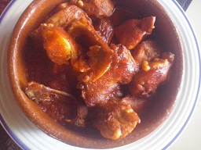

Conejo con salsa de tomate

Ingredientes para 6 personas:
- 1 conejo troceado
- 2 ajos
- Sal y pimienta
- 1 cebolla grande
- 1,5 kg de tomate
- Orégano
- 1 vasito de vino blanco
- 1 cucharadita de Azúcar
- Aceite
Realización:
Freír el conejo con sal y pimienta y reservar
Para la salsa de tomate , picar la cebolla
finita ponerla a pochar agregar los tomates
partidos y pelados , la sal y el azúcar ,
agregar el orégano , cuando este 1 hora
aproximadamente agregar el vino y dejar
½ hora más , pasarlo por el pasapuré e
incorporar conejo , dejarlo 10 minutos más y servir